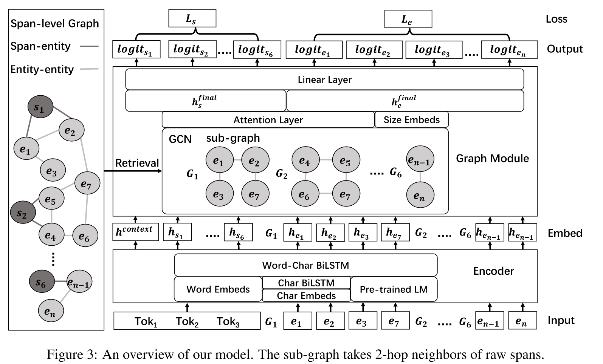

Nested Named Entity Recognition with Span-level Graphs
完成时间：2023-11-25
来自：ACL 2022
题目：《具有span级图的嵌套命名实体识别》
来自：https://zhuanlan.zhihu.com/p/569232453
具体概述
1. 目标
解决嵌套NER中存在正负样本大量重叠时基于span-based、以及大多数实体在进行推理时从未出现在训练集等情况
2. 创新点
（1）首先在嵌套NER中引入基于检索的跨度级别图来建模候选跨度和当前句子之外实体之间的词汇相关性。
（2）与GCNs进行消息传递并进行多任务学习，以有效地从候选跨度的实体邻居中提取丰富的信息。
（3）在三个常见的嵌套NER数据集( ACE2004、ACE 2005、GENIA)上进行实验。实证结果和广泛的分析表明，我们的方法在所有三个基准上都优于强基线，并且在长和低频跨度上具有特殊的优势。
3. 方法概述

作者根据n-gram特征，构建了基于检索的图来改进span表示。该方法中使用了两个span级别图：实体-实体图 和 span-实体图 。如果将每个实体提及或原始span视为多个相邻标记的span，则这两个图都对span之间的关系进行建模。
对于初始span和实体提及，作者使用了char embeddings, word embeddings 和 pre-trained LM 。句子和实体提及都被视为标记序列并分别编码。首先，char embeddings嵌入输入双向LSTM中，以捕获单词的正字法和形态学特征。然后，预训练的语言模型（如BERT）用于上下文化表示。这些表示是最后一层中的平均BPE嵌入。最后，将char隐藏状态，上下文化嵌入和词嵌入连接起来，输入另一个双向LSMT（Word-Char BiLSTM），用于词的编码表示。对于span级别的表示，作者使用最大池化来对span内的单词进行编码表示。